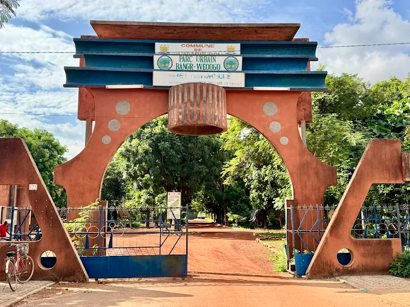

➤DESCRIPTION DU PARC URBAIN BANGR-WEOGO
Le Parc urbain Bangr-Weogo est une forêt classée et un espace naturel protégé situé en plein cœur de Ouagadougou, la capitale du Burkina Faso. Surnommé le « poumon vert » de la ville, cet espace de 265 hectares (dont 140 hectares aménagés) joue un rôle écologique majeur en séquestrant le gaz carbonique et en régulant le climat urbain. C'est un lieu privilégié pour le tourisme, la détente familiale, l'éducation environnementale et la recherche scientifique.
➤HISTORIQUE DU MUSEE NATIONAL DU BURKINA FASO
Ancien domaine sacré de l'Empereur des Mossis (le Moro Naba), l'espace a été protégé dès 1936 sous l'administration coloniale française. Il a ensuite été réaménagé dans les années 1990 pour devenir le parc urbain actuel. Le site est également certifié comme une zone humide d'importance internationale (site Ramsar).
➤Le parc urbain Bangr-Weogo abrite une riche biodiversité composée d'un parc animalier avec de nombreuses espèces de la faune locale, d'un jardin botanique préservant la flore burkinabè, ainsi que d'espaces de loisirs et de jeux pour les enfants. Ce site naturel comprend également des sentiers de promenade, un musée dédié à l'environnement et un centre de documentation pour les chercheurs et les étudiants.
- Emplacement: situé dans la partie nord-est du centre-ville
- Horaires: Du mardi au dimanche de 5h30 à 18h00
- Accès: payant
- Géolocalisation: Voir le Parc Bangr Weogo sur Google Maps